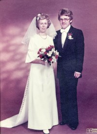

Asbjørg Volden
K, #226, f. 14 april 1906, d. 19 juni 1928
Foreldre
Familie: Johan Livik (f. 4 juli 1903, d. 21 april 1928)
Biografi
Asbjørg Volden ble født den 14 april 1906 på/i Horvereid; Kolvereid, Nærøy, Nord-Trøndelag. Hun giftet seg med
Johan Livik i 1927. Hun døde den 19 juni 1928 på/i Kolvereid, Nærøy, Nord-Trøndelag. Hun ble gravlagt den 28 juni 1928 på/i Kolvereid kirkegård, Nærøy, Nord-Trøndelag.
Asbjørg Volden was also known as Asbjørg Livik. Hun ble døpt den 29 juli 1906 på/i Kolvereid kirke, Nærøy, Nord-Trøndelag. Hun ble konfirmert i 1922 på/i Kolvereid kirke, Nærøy, Nord-Trøndelag.
| Sist redigert |
2 januar 2016 00:00:00 |
| Slektskap | Grandtante til Håkon Wahl |
Gunerius Iversen Laugen
M, #227, f. 16 oktober 1843, d. mai 1906
Foreldre
Biografi
Gunerius Iversen Laugen ble født den 16 oktober 1843 på/i Skogn, Levanger, Nord-Trøndelag. Han giftet seg med
Anne Sofie Jørgensdatter den 4 november 1868 på/i Nærøy, Nord-Trøndelag. Han døde i mai 1906 på/i South Dakota, USA.
Gunerius Iversen Laugen ble døpt den 10 desember 1843 på/i Alstadhaug kirke, Skogn, Levanger, Nord-Trøndelag. Gunnerius var en usedvanlig kraftig kar. Han og
Anne Sofie Jørgensdatter kjøpte i 1871 Laugsjøen ytre 27/8, Lauga, Nærøy, Nord-Trøndelag, kjøpesum 200 spd. men kom midt i 1890-årene ut i økonomisk uføre. Sønnen Johan Arnt kom tilbake fra Amerikaopphold i tide til å berge og beholde heimen i slekta.
Det var vanskelige tider for familien, noe som fremgår av grunnbok og pantedokumenter på gården:
- 3.3.1894 fikk Georg Bull utlegg for gjeld på kr 90,09 i «denne Gaard samt i en Hoppe»
- Samme dato får ?.J. Wiig utlegg for en gjeld på kr 160,30 i «denne Gaard samt i Kreature, Løsøresaker, Gaardsredskaper og Innbo»
- 12.1.1895 låner vel Gunerius Iversen Laugen penger, eller har allerede gjeld, idet han utsteder en obligasjon på kr 291,20 til Anthon M(?) Brandtzæg.
- 1.6.1895 får samme Brandtzæg utlegg på kr 310,58 i «denne Gaard samt Løsøre»
- 26.10.1895 utlegg på kr 127,83 til Lensmand Evensen i «denne Gaard samt i Kreature, 2 Baade, Fiskeredskaber, Indbo m.m.»
- 24.4.1897 utsteder Gunerius en pantobligasjon på kr 1.500 med første prioritet til Hypoteksbanken.
Utleggene nevnt foran blir denne dagen slettet. De er da blitt innfridd av lånet i Hypotekbanken.
- 15.6.1897 utlegg til Kolvereid Sparebank på kr 148,28 i «denne Gaard, Kreature og diverse Løsøre»
- 24.7.1897 selger Gunerius gården til sønnen Johan Arnt for kr 2.900 samt kår til en årlig verdi av kr 20,- til «Sælgeren og Hustru».
Han immigrerte til Pierre, South Dakota, USA, den 11 mars 1903.
| Sist redigert |
20 august 2022 20:28:43 |
| Slektskap | Tippoldefar til Håkon Wahl |
Anne Sofie Jørgensdatter
K, #228, f. 22 juni 1844, d. 19 september 1925
Foreldre
Biografi
Anne Sofie Jørgensdatter ble født den 22 juni 1844 på/i Laugsjøen, Nærøy, Nord-Trøndelag. Hun giftet seg med
Gunerius Iversen Laugen den 4 november 1868 på/i Nærøy, Nord-Trøndelag. Hun døde av alderdom den 19 september 1925 på/i Nakling; Kolvereid, Nærøy, Nord-Trøndelag. Hun ble gravlagt den 27 september 1925 på/i Lundring kirkegård, Nærøy, Nord-Trøndelag.
Anne Sofie Jørgensdatter was also known as Anne Sofie Laugen. Hun ble døpt den 25 august 1844 på/i Nærøy, Nord-Trøndelag. Hun og
Gunerius Iversen Laugen kjøpte i 1871 på/i Laugsjøen ytre 27/8, Lauga, Nærøy, Nord-Trøndelag. kjøpesum 200 spd. men kom midt i 1890-årene ut i økonomisk uføre. Sønnen Johan Arnt kom tilbake fra Amerikaopphold i tide til å berge og beholde heimen i slekta. Hun ble jordfestet den 29 august 1926 Lundring kirkegård, Nærøy, Nord-Trøndelag.
| Sist redigert |
16 august 2024 22:03:18 |
| Slektskap | Tippoldemor til Håkon Wahl |
Ragnhild Laugen
K, #229, f. 6 juli 1935, d. 10 oktober 1999
Foreldre
Familie: Einar Hansen (f. 13 juni 1926, d. 13 mars 1997)
| Datter | Marit Irene Hansen+ (f. 22 april 1955) |
| Datter | Reidun Elisabeth Hansen+ (f. 8 desember 1956) |
| Sønn | Tor Jonny Hansen+ (f. 26 september 1961) |
| Sønn | Roy Steinar Hansen Elstad+ (f. 1 mars 1965) |

Ragnhild og Einar Hansen
Biografi
Ragnhild Laugen ble født den 6 juli 1935 på/i Nærøy, Nord-Trøndelag. Hun giftet seg med
Einar Hansen den 6 november 1954 på/i Nærøy, Nord-Trøndelag.

Hun giftet seg med Reidar Breivik etter 1998. Hun døde den 10 oktober 1999 på/i Rørvik, Vikna, Nord-Trøndelag. Hun ble gravlagt den 15 oktober 1999 på/i Steine kirke, Nærøy, Nord-Trøndelag.
Ragnhild Laugen was also known as Ragnhild Hansen. Hun was also known as Ragnhild Breivik.
| Sist redigert |
22 juli 2025 18:02:21 |
Tore Reinert Laugen
M, #234, f. 8 mai 1943, d. 12 mars 2021
Foreldre
Familie: Solveig Augdahl (f. 18 april 1943)
| Datter | Beate Augdal Laugen (f. 6 mai 1966) |
| Sønn | Stig Tore Laugen+ (f. 7 august 1976) |

Solveig og Tore Laugen - bryllup
Biografi
Tore Reinert Laugen ble født den 8 mai 1943 på/i Nærøy, Nord-Trøndelag. Han giftet seg med Solveig Augdahl den 6 mars 1976 på/i Alstadhaug kirke, Skogn, Levanger, Nord-Trøndelag.
Han døde den 12 mars 2021. Han ble gravlagt den 19 mars 2021 på/i Alstadhaug kirkegård, Levanger, Nord-Trøndelag.
Tore Reinert Laugen bodde på/i Bjørkliveien, Røra, Inderøy, Nord-Trøndelag.
| Sist redigert |
16 mai 2025 18:40:42 |
| Slektskap | Søskenbarn 1 gang forskjøvet til Håkon Wahl |
Henrik Neumann Jacobsen Melgaard
M, #246, f. 1776, d. 4 juni 1851
Foreldre
Biografi
Henrik Neumann Jacobsen Melgaard ble født i 1776 på/i Beitstad, Steinkjer, Nord-Trøndelag. Han giftet seg med
Olava Ovesdatter Storvea i 1799. Han døde den 4 juni 1851 på/i Nakling; Kolvereid, Nærøy, Nord-Trøndelag. Han ble gravlagt den 15 juni 1851 på/i Kolvereid kirkegård, Nærøy, Nord-Trøndelag.
Henrik Neumann Jacobsen Melgaard brukte omtrent 1806 Nakling 28/4, Nakling; Kolvereid, Nærøy, Nord-Trøndelag.
| Sist redigert |
2 januar 2016 00:00:00 |
| Slektskap | 2. tippoldefar til Håkon Wahl |
Olava Ovesdatter Storvea
K, #247, f. 1772, d. 25 august 1847
Foreldre
Biografi
Olava Ovesdatter Storvea ble født i 1772 på/i Nærøy, Nord-Trøndelag. Hun giftet seg med
Henrik Neumann Jacobsen Melgaard i 1799. Hun døde den 25 august 1847 på/i Nakling; Kolvereid, Nærøy, Nord-Trøndelag. Hun ble gravlagt den 26 august 1847 på/i Kolvereid kirkegård, Nærøy, Nord-Trøndelag.
| Sist redigert |
2 januar 2016 00:00:00 |
| Slektskap | 2. tippoldemor til Håkon Wahl |
Ove Storvea
M, #248, f. før 1752
Familie: Ane (f. før 1752)
Biografi
Ove Storvea ble født før 1752. Han giftet seg med
Ane.
| Sist redigert |
7 september 2018 00:00:00 |
| Slektskap | 3. tippoldefar til Håkon Wahl |
Jacob Henriksen Melgaard
M, #249, f. 1746, d. 1810
Biografi
Jacob Henriksen Melgaard ble født i 1746 på/i Innherrad ?, Nord-Trøndelag. Han giftet seg med
Gunelle Jørgensdatter. Han giftet seg med
Maren Jacobsdatter den 2 november 1798. Han døde i 1810 på/i Storvea, Nærøy, Nord-Trøndelag.
Det er usikker hvor Jacob og familien kom fra. Beitstad har pekt seg ut som svært sannsynlig, mens enkelte slektsforskere har holdt på ei av bygdene i Gudbrandsdalen. Jacob var fra 1777 en kjent person i bygda. Han tok til som leilending i Storveadalen under Peter Jacob Sverdrup. Jacob Henriksen Melgaard kjøpte i 1796 Storvea gnr. 10, Storvea, Nærøy, Nord-Trøndelag, på 4. gangs dødsboauksjon etter Peter Jacob Sverdrup for 352 riksdaler. Gården ble ved dette sjøleiergård og har senere tilhørt brukerne.
| Sist redigert |
4 august 2022 18:24:49 |
| Slektskap | 3. tippoldefar til Håkon Wahl |
Gunelle Jørgensdatter
K, #250, f. 1741, d. 2 september 1794
Foreldre
Biografi
Gunelle Jørgensdatter ble født i 1741 på/i Nærøy, Nord-Trøndelag. Hun giftet seg med
Jacob Henriksen Melgaard. Hun døde den 2 september 1794 på/i Storvea, Nærøy, Nord-Trøndelag.
| Sist redigert |
28 juli 2018 00:00:00 |
| Slektskap | 3. tippoldemor til Håkon Wahl |
{kind=link}
{kind=link}